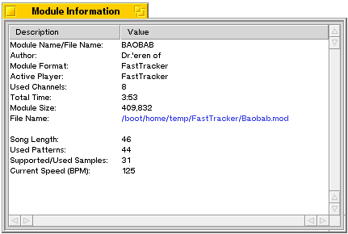

Module information

This button shows module information window. Here you can see all information about playing module. If you click "File Name" APlayer
will open its folder to Tracker and selects module. Part above the "File Name" is always same while lower part changes depending on what type of module you are playing.
|